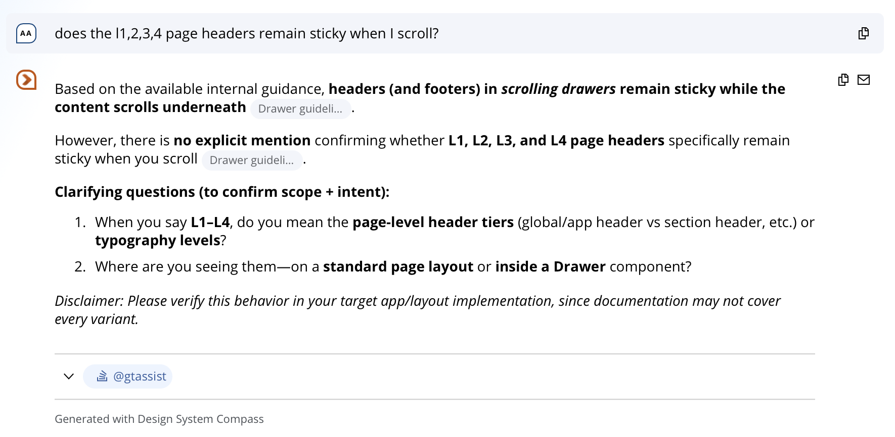
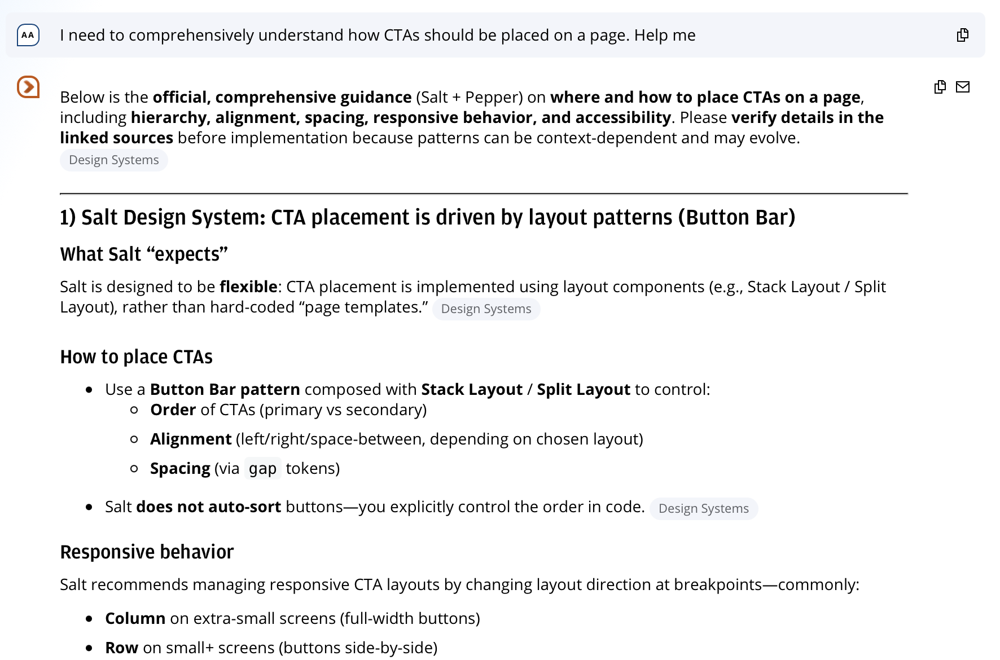

Design System Compass
A conversational assistant that answers design system questions before you have to ask the team.
The Problem
Design system support doesn't scale. Every question answered by a human is a question that could have been answered by the system itself. At enterprise scale — dozens of product teams, two design systems, constantly evolving components — the support burden becomes a bottleneck.
Designers were asking the same questions. The answers existed in documentation. The gap was access: the docs were there, but finding the right answer fast enough to matter wasn't.
What I Built
In January 2026, I built Design System Compass — an LLM assistant for the Global Banking Design System that lets designers query component guidelines, usage rules, and best practices directly, without routing through the design systems team.
The assistant was built using JPMC's internal AI infrastructure, with comprehensive instruction sets covering both the open-source Salt foundation and the enterprise pattern layer built on top of it. Writing those instruction sets was the hardest part: the model needed enough context to give accurate, specific answers — not paraphrased documentation.
In Practice
Compass answers questions about component behavior — sticky header rules across scroll contexts, CTA placement guidance, Salt vs. enterprise layer breakdowns, and responsive behavior rules.
Answers cite sources. When documentation doesn't cover a case, Compass flags the gap rather than guessing — the same anti-hallucination discipline built into the broader Agentic Design System.


Why It Matters
This is a different kind of design system artifact. Not a component. Not a guideline page. A conversational layer on top of the system that makes it more likely to be used correctly — and faster to query than any documentation site.
Compass is in active use with 80+ designers across Global Banking, with a full CIB-wide rollout planned for Q4 2026. It connects directly to the broader agentic design system infrastructure — the same component data dictionary that powers code generation also powers Compass's answers.